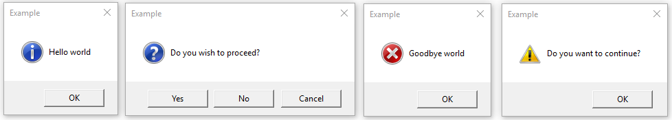

tkinter.messagebox --- Tkinter 메시지 프롬프트¶
소스 코드: Lib/tkinter/messagebox.py
tkinter.messagebox 모듈은 일반적으로 사용되는 구성을 위한 다양한 편의 메서드 뿐만 아니라 템플릿 베이스 클래스를 제공합니다. 메시지 상자는 모달(modal)이며 사용자 선택에 따라 (True, False, OK, None, Yes, No)의 부분 집합을 반환합니다. 일반적인 메시지 상자 스타일과 레이아웃에는 다음이 포함되지만 이에 국한되지는 않습니다:

-
class
tkinter.messagebox.Message(master=None, **options)¶ 기본 정보 메시지 상자를 만듭니다.
정보 메시지 상자
-
tkinter.messagebox.showinfo(title=None, message=None, **options)¶
경고 메시지 상자
-
tkinter.messagebox.showwarning(title=None, message=None, **options)¶ -
tkinter.messagebox.showerror(title=None, message=None, **options)¶
질문 메시지 상자
-
tkinter.messagebox.askquestion(title=None, message=None, **options)¶ -
tkinter.messagebox.askokcancel(title=None, message=None, **options)¶ -
tkinter.messagebox.askretrycancel(title=None, message=None, **options)¶ -
tkinter.messagebox.askyesno(title=None, message=None, **options)¶ -
tkinter.messagebox.askyesnocancel(title=None, message=None, **options)¶